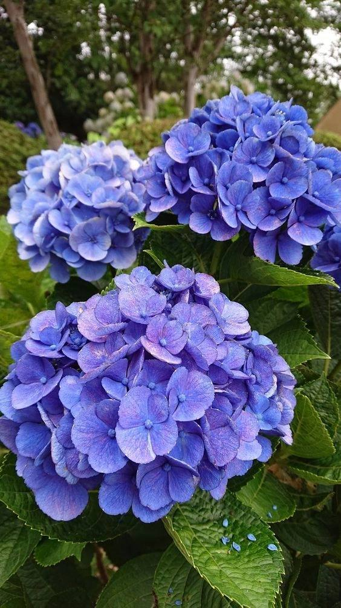
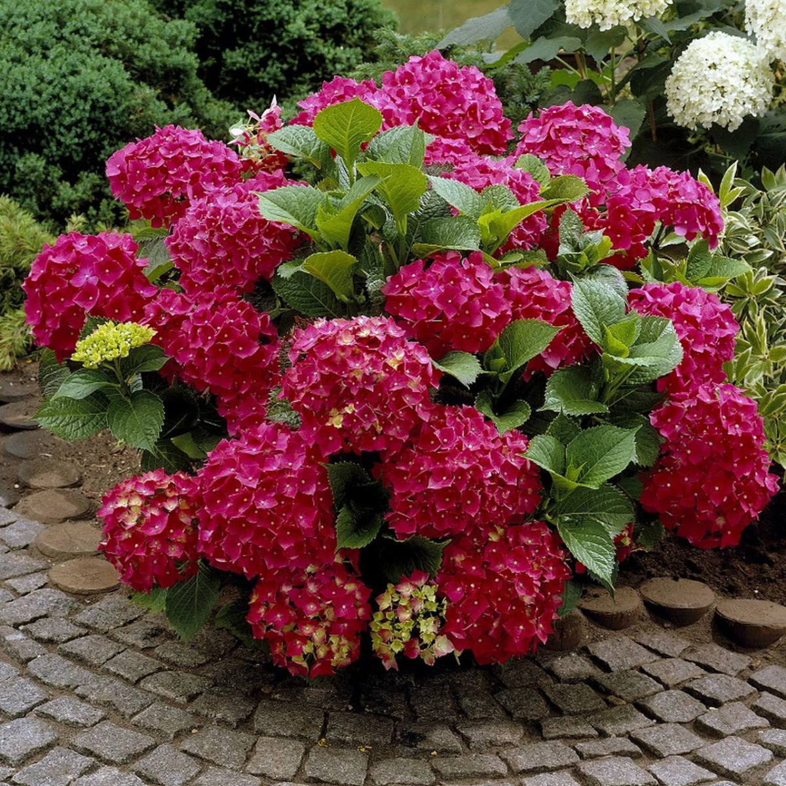
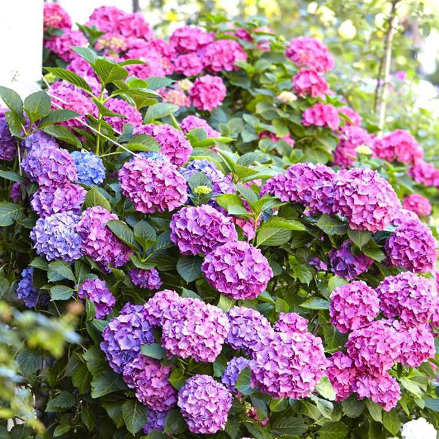

"Gartenziya guli" yoki "Gardenia" nomi orqaqtosh chiyamiz bitkisi oilasi gullardan biridir. Bu bitka Amerika, Avstraliya va Asiyoning qismi bo'lgan orqalarni o'ziga jamlab olgan daraxtlar oilasiga mansub. Gartenziyalar o'simlik qadrlarining o'ziga xos guli, go'shti va haroratni yaxshi sevuvchi o'simliklardan biri sifatida bilinadi. Ular yaxshi ko'proq ko'nikmalarga yoki botanik shahsiyatlarga ega bo'lgan ba'zi odamlar uchun erkak yoki ayol ismi sifatida taniladi. Gartenziyalarning kichik, aksariyati oshiq qizil, oq yoki oq qizil rangidagi gullaridan tashkil topgan. Ular kichik daraxtlar yoki o'simliklar sifatida ekinlarda, bag'larda yoki botanik bog'larda yetishtiriladi. Gartenziyalar dekorativ qadrlari va haroratga qarshi tarkibi tufayli og'ir iste'mol uchun mos bo'ladi. Ta'minot, mevalar va haroratni yo'qotmaydi, shuning uchun ular o'tamga tayyor emas. Yerda ishlab chiqarilgan Gartenziya gullari mashhur bo'lgan gullar va sovg'alar butiklari va bazarlarida ko'p topiladi.
  